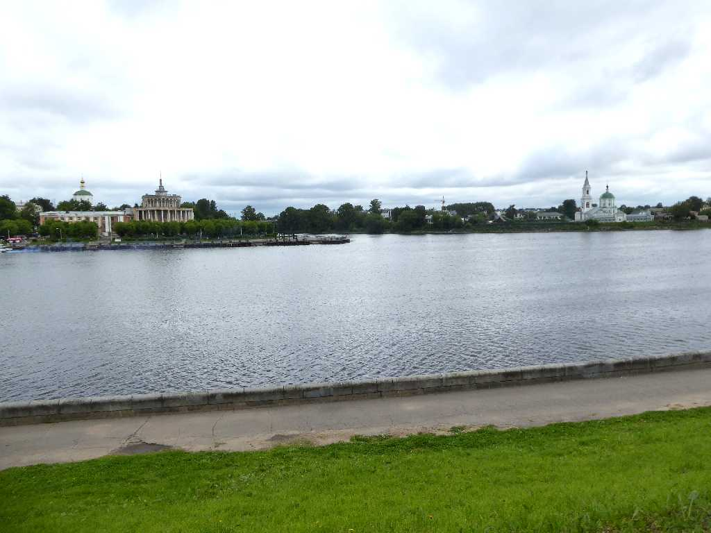
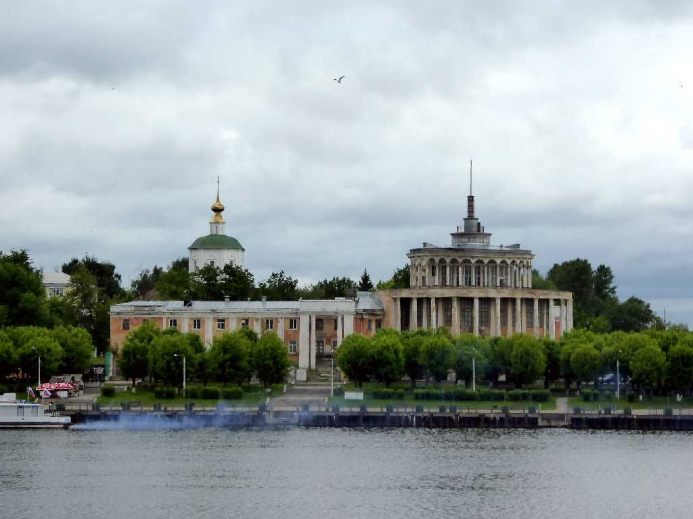
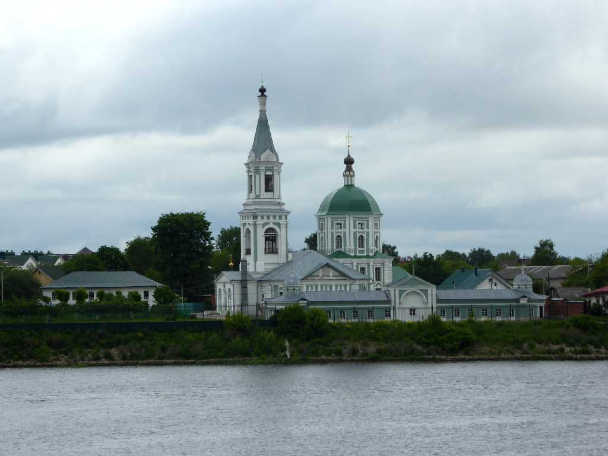
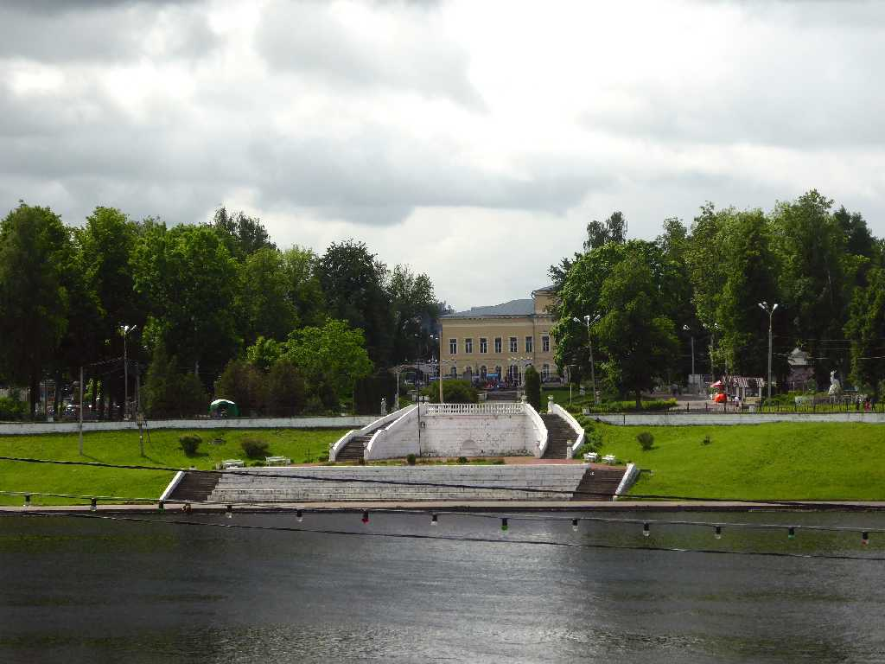
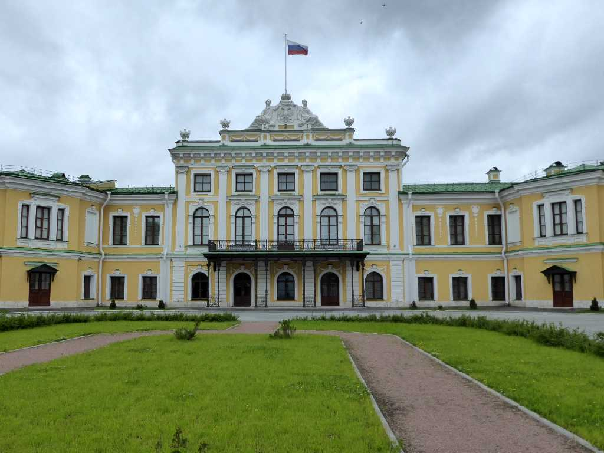
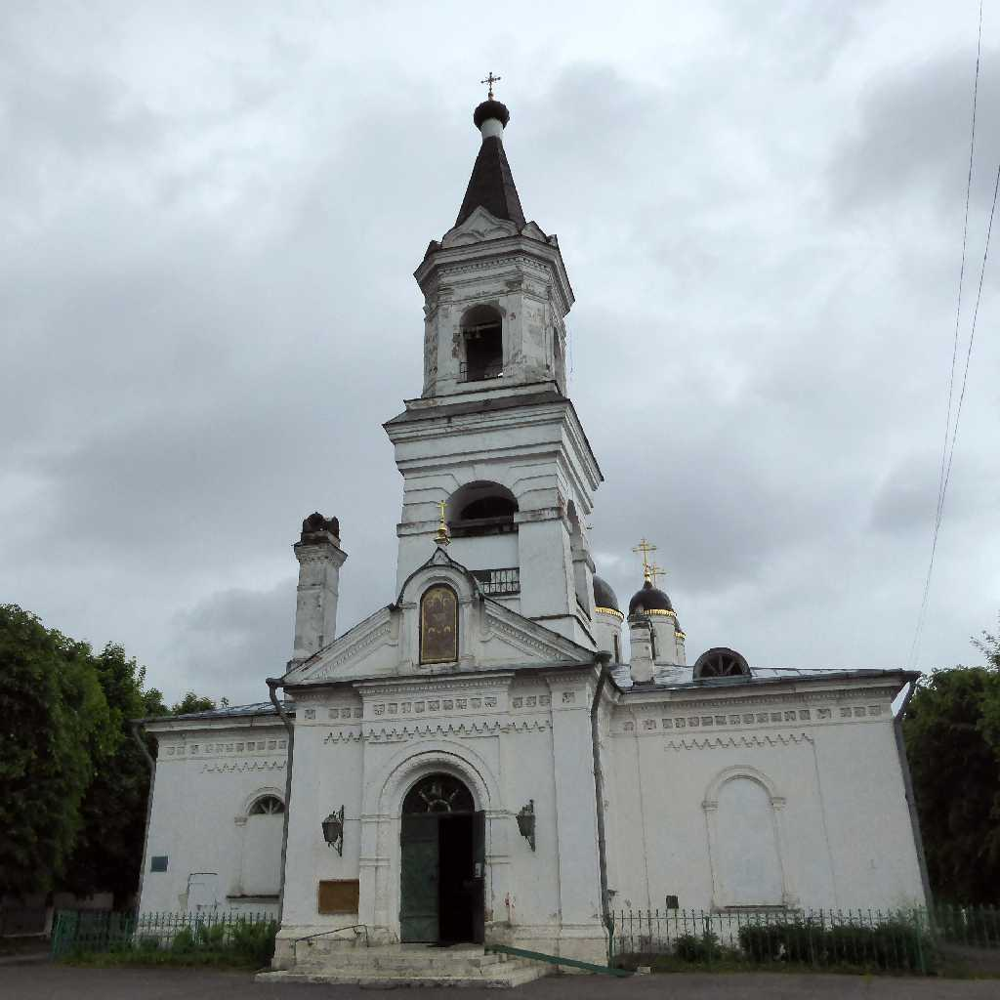
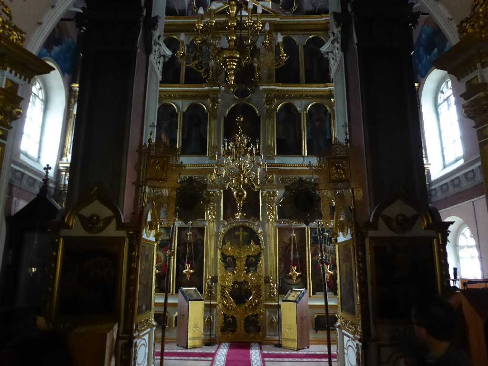
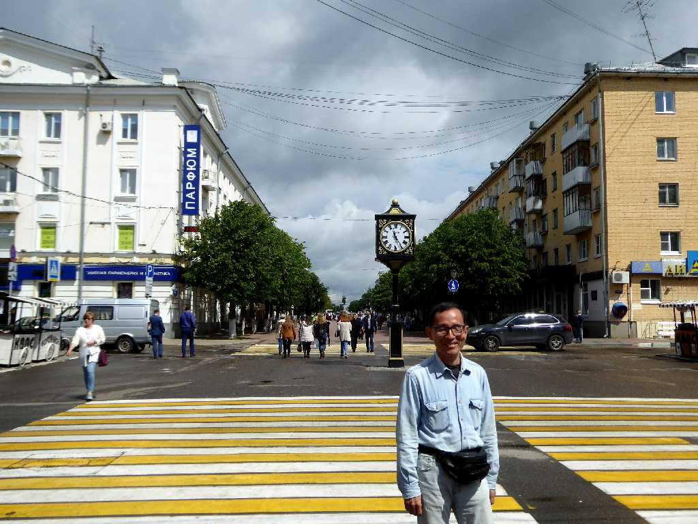

Volga River Tver
ヴォルガ川河畔の街トヴェリ

Uspensky Cathedral
生神女就寝大聖堂

St. Catherine Convent
聖キャサリン修道院

Royal Palace Volga River Tver

Royal Palace

Beloy Troitsy Church

Altar Beloy Troitsy Church

June 14 2017 Tver